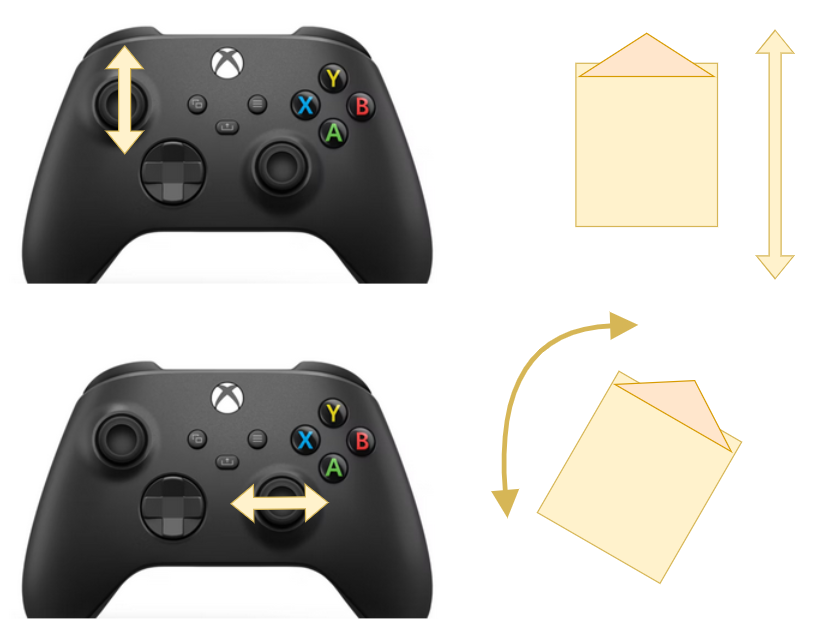
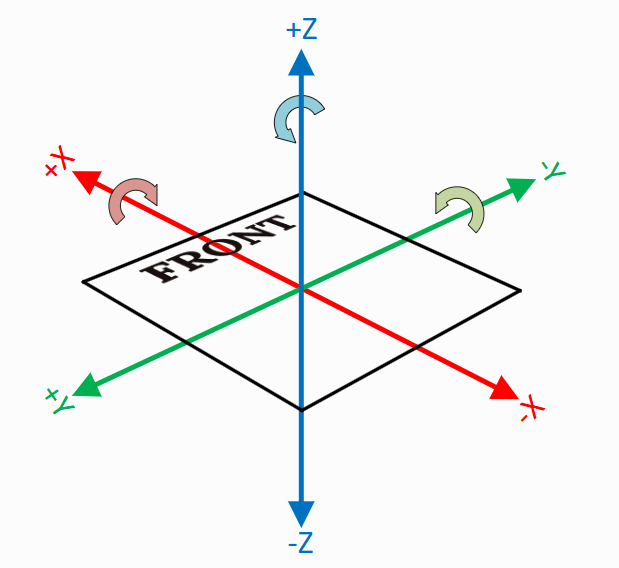
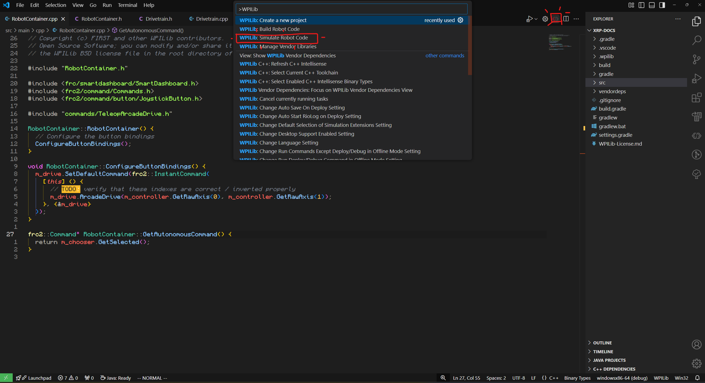

Arcade Drive (Intro Programming)
Welcome to learning Arcade Drive!. This tutorial is meant to prepare you for both programming and learning how to design systems for command-based robots in FRC. This tutorial assumes you have little to no experience in C++, and will walk you through every step from project creation to driving a robot.If a section seems to boring/trivial, skip to the next. In order to accomadate all skill levels, we'll start from almost zero.
If it's your First Time Here...
If this is your first introduction to programming in the FRC ecosystem: welcome!!.
In FRC, robots are programmed using the C++ language alongside the WPILib control system, which is essentially just a big tool box that we use to create software for the robots. We won't dig into the guts here, but if you want to read more: follow the link above.
So - Programming? 💻
We typically think of computers as black boxes: we click on pictures on a screen, and somehow this magical box of silicon tricks spits out websites, games, videos, and all manners of sorcery.
Turns out, it's not magic at all: just code! The robot you are about to write for is no different, except it's missing everything we use to interract with a computer: mouse, keyboard, screen, sound, etc.
This is an example of a so-called embedded system. From Wikipedia:
"An embedded system is a specialized computer system—a combination of a computer processor, computer memory, and input/output peripheral devices—that has a dedicated function within a larger mechanical or electronic system."
Long story short: it is a computer that has no way for you, the user, to give it input (at least in traditional ways). The computer is designed to do one thing over and over again, without much complaining.
In FRC, the rules designate that we must use a RoboRio 2 by National Instruments that looks like this:

This is the comptuer you are writing code for! In ARGOS 1756, we use the C++ language, but it is also possible to write code using Python, Java, and LabView.
If you don't know what a programming language is, it is just like any other language (Spanish, French, German) but instead of talking beteween people, you are talking to comptuers.
Meet Your Robot. 🤖
The NI RoboRio is pretty expensive, and requires a lot more hardware to get a minimal robot working, so we've decided to help you learn using Sparkfun's XRP Platform:

The beautiful thing about this robot is you can program it using WPILib! This makes it perfect for low-risk, low-cost training. This will be the robot you get driving around with this tutorial.
From Zero to "Hello World!" ✋
Go ahead and open another browser tab away from this one and go to onlinegdb.com/online_c++_compiler so you can write some code in your browser without downloading any of the complicated tooling. (which you will need later to program the robot).
Commonly, programmers start a new language by writing a very simple program that
tells the user Hello World! it will print this message to the terminal. While
normal people don't typically interract with terminals, it offers a very simple
way to get output from your code, to the user.
Why no pretty windows?
Why would we use this "terminal" if we always have pretty buttons and text to click on? Well, put short: it's a lot more code to make things pretty. The terminal uses a built-in feature to most operating systems called stdout (standard-out). This a much easier way to talk to a user.
For this exercise, just copy-paste the code below into the text editor on the website:
Click "Run" on the top, and see what happens! You should see the following output in the terminal at the bottom:
Congradulations!!
You just wrote your first C++ program. Take a minute to take in what each of these lines sort of mean:
#include <iostream> // Includes code that lives "elsewhere"
// (don't worry about what that means for now).
// This "iostream" gives me the ability to use the code
// I've written below to print to the terminal.
int main()
{ // Everything between this open bracket and the following closing bracket is part of "main"
// This is where your code will start running. We call "main" the "entry-point"
// because it is where your code will start running. main is special because
// the computer "looks for" this function to execute first.
// The line below is what actually prints to the terminal
std::cout << "Hello, World!\n";
// returning the number zero means "the program worked OK!"
return 0;
} // The end of "main"
Comments
Comments are those bits of text I wrote starting with //. Everything after // in a
line the computer will ignore. These are called "comments" and programmers use them to
communicate the intenet of code to other programmers.
Now you've written your first bit of magi- I mean code. While simple, this highlights a few important concepts that you will need throughout the entirety of your hopefully long and prosperous software journey:
Code executes from "top to bottom"
First, we included, then we wrote the console, then we "returned" zero.
Returning Values
When you run a "function" (what "main" is) you can give values back to other parts of code: which is what we are doing with the "0". We give it back to whatever called (ran) our "main" function.
Including Libraries
We call collections of other people's (or our own) code "libraries", we can include these by...
well, the #include of course! For this case, in order to write the line
std::cout << "Hello, World!\n";, we need to include iostream which we do by writing:
#include <iostream>. iostream contains some code that comes with C++ that helps us
write to the terminal.
Quicksave Here for Later 💾
The last section was pretty much the most bare-bones basic example you can do with any programming language. You can imagine that there is some complexities that lie between printing "Hello World!" to a user and programming a robot with tons of motors, sensors, and moving parts.
This is true, but don't let it overwhelm you. The most important thing to remember is that every system can be broken up into little pieces.
This tutorial is skipping a lot about C++ and programming in general to focus specifically on writing code for robots. If you want, finish this tutorial then come back here and follow a couple of these links to learn more general programming and C++:
For reference (looking up standard functions & libraries) I personally prefer:
- Cpp Reference - Fair warning: it's very wordy and technical
CPP Reference Example
For example, if you wanted to know what all is inside iostream you can go
here and then from
there read about cout
Your Robotic Task 📎
Your task for the rest of this tutorial is to get a robot to move. Specifically, it needs to move in a way that we call Arcade Drive.
Arcade Drive is just a way we use to describe what we expect the robot to do when you move the two sticks on a classic x-box controller. The idea here is that the left stick moves the robot forward/back and the right stick turns. For those of you that play video games: yea it's that.
Assumptions About Software
This tutorial is making the assumption you are working on a machine that has all the tools you need installed for you by your resident tech guru. If you're missing these tools, go summon your guru to bestow upon you the tools needed to write code for robots.
First off, let's get a quick picture of what we want the robot to do:

Like we described before, the left stick controls the "power" either forward or back from the robot, and the right stick controls the left and right "power".
The Pre-Code Workout 📊
Before we write any code, it's important to make a flow chart of what we need to do, in human readable tasks. When you are solving any problem in software, it's important to do a step like this either in your head, or on paper.
Let's start with listing out the tasks we need to perform:
- Turn robot left and right
- Drive forward and back
- Read left stick from controller
- Read right stick from controller
Now that we have that, let's make a chart of what our code needs to do. Programmers use flow charts a lot to visualize a plan for implementing code:
flowchart TD
a[Read right stick from controller]
b[Read left stick from controller]
c[Set forward speed]
d[Set turn speed]
s(start) --> a
a --> b
b --> c
c --> dWhile simple, it's important to keep the tasks at hand striat. I will walk you through how to do each of these things in code in the next section.
Project Creation & Setup 🏗️
XRP Only
These instructions are designed for the XRP robot ONLY. Similar concepts apply for full-scale robots, but this is by no means an arcade tutorial for swerve drive. This code assumes that some things are present from specifically the XRP example generated by WPILib
To start things off, you'll need to open 2025 VsCode from the start menu / desktop. Wherever it is located.
From here, I will defer to WPILib for how to create the XRP project. Follow the instructions on this page (including running the program) and then come back here when you are done.
Success
Congrats!!! If you went to WPILib, followed the docs, and came back here: you just followed your first technical documentation tutorial!
But... Where is main? I thought that's where code went?
Ok yes, you caught me. This is one of those "complexities" I mentioned earlier.
The main function here is burried deep, deeper than we will ever go into
the toolbox that is WPILib. We won't ever interract with it at all.
You'll notice there are lots of files in this project, so it can be hard to
tell where we start. For now: just accept that we will be primarily working
in the file RobotContainer.cpp. This file "contains" different commands
that will be run on the robot. (Imagine that, robot container containing the robot?)
VSCode Shortcut
Use the shortcut ctrl+p to get a search bar where you can type in any file
name, and VSCode will take you there. You can also use ctrl+shift+p to get
the command pallate, where you can type pretty much any command you can click.
Go ahead and open that RobotContainer.cpp file. It should be under: /src/main/cpp
inside of your project. Navigate to it using the shortcut from the tip above,
or with the explorer on the left.
This is where we will do most of our writing.
Finally - Let's Write Some Code ✍️
Your file (RobotContainer.cpp) should look like this to start:
// Copyright (c) FIRST and other WPILib contributors.
// Open Source Software; you can modify and/or share it under the terms of
// the WPILib BSD license file in the root directory of this project.
#include "RobotContainer.h"
#include <frc/smartdashboard/SmartDashboard.h>
#include <frc2/command/Commands.h>
#include <frc2/command/button/JoystickButton.h>
#include "commands/TeleopArcadeDrive.h"
RobotContainer::RobotContainer() {
// Configure the button bindings
ConfigureButtonBindings();
}
void RobotContainer::ConfigureButtonBindings() {
// Also set default commands here
m_drive.SetDefaultCommand(TeleopArcadeDrive(
&m_drive, [this] { return -m_controller.GetRawAxis(1); },
[this] { return -m_controller.GetRawAxis(2); }));
// Example of how to use the onboard IO
m_userButton.OnTrue(frc2::cmd::Print("USER Button Pressed"))
.OnFalse(frc2::cmd::Print("USER Button Released"));
frc2::JoystickButton(&m_controller, 1)
.OnTrue(frc2::cmd::RunOnce([this] { m_arm.SetAngle(45_deg); }, {}))
.OnFalse(frc2::cmd::RunOnce([this] { m_arm.SetAngle(0_deg); }, {}));
frc2::JoystickButton(&m_controller, 2)
.OnTrue(frc2::cmd::RunOnce([this] { m_arm.SetAngle(90_deg); }, {}))
.OnFalse(frc2::cmd::RunOnce([this] { m_arm.SetAngle(0_deg); }, {}));
// Setup SmartDashboard options.
m_chooser.SetDefaultOption("Auto Routine Distance", &m_autoDistance);
m_chooser.AddOption("Auto Routine Time", &m_autoTime);
frc::SmartDashboard::PutData("Auto Selector", &m_chooser);
}
frc2::Command* RobotContainer::GetAutonomousCommand() {
return m_chooser.GetSelected();
}
Header Files
The very first thing I want to draw your attention to is the #include towards
the top:
You'll notice that this is including (or rather, taking the code of and using it here)
a file called RobotContainer.h. This is actually a file located within our project at:
src/main/include/RobotContainer.h.
This is called a "Header" file. Most "parts" of software in any C++ projects
come in pairs of files. A "source" file (RobotContainer.cpp) and a "header"
file: (RobotContainer.h). Each one has it's own job:
- The source file contains the "actual" code that is used on the robot.
- The header file tells other source files what to expect from your code.
I know that was probably a little confusing, but let's look at a concrete example:
Looking at the RobotContainer.cpp file, you'll see a couple functions with funny synatx:
RobotContainer::RobotContainer() {
// Stuff in here ...
}
void RobotContainer::ConfigureButtonBindings() {
// Stuff in here ...
}
frc2::Command* RobotContainer::GetAutonomousCommand() {
// Stuff in here ...
}
Now, use the explorer or ctrl+p shourtcut to look at the file RobotContainer.h:
// Copyright (c) FIRST and other WPILib contributors.
// Open Source Software; you can modify and/or share it under the terms of
// the WPILib BSD license file in the root directory of this project.
#pragma once
#include <frc/Joystick.h>
#include <frc/smartdashboard/SendableChooser.h>
#include <frc/xrp/XRPOnBoardIO.h>
#include <frc2/command/Command.h>
#include <frc2/command/CommandPtr.h>
#include <frc2/command/button/Trigger.h>
#include "Constants.h"
#include "commands/AutonomousDistance.h"
#include "commands/AutonomousTime.h"
#include "subsystems/Arm.h"
#include "subsystems/Drivetrain.h"
/**
* This class is where the bulk of the robot should be declared. Since
* Command-based is a "declarative" paradigm, very little robot logic should
* actually be handled in the {@link Robot} periodic methods (other than the
* scheduler calls). Instead, the structure of the robot (including subsystems,
* commands, and button mappings) should be declared here.
*/
class RobotContainer {
// NOTE: The I/O pin functionality of the 5 exposed I/O pins depends on the
// hardware "overlay"
// that is specified when launching the wpilib-ws server on the Romi raspberry
// pi. By default, the following are available (listed in order from inside of
// the board to outside):
// - DIO 8 (mapped to Arduino pin 11, closest to the inside of the board)
// - Analog In 0 (mapped to Analog Channel 6 / Arduino Pin 4)
// - Analog In 1 (mapped to Analog Channel 2 / Arduino Pin 20)
// - PWM 2 (mapped to Arduino Pin 21)
// - PWM 3 (mapped to Arduino Pin 22)
//
// Your subsystem configuration should take the overlays into account
public:
RobotContainer();
frc2::Command* GetAutonomousCommand();
private:
// Assumes a gamepad plugged into channel 0
frc::Joystick m_controller{0};
frc::SendableChooser<frc2::Command*> m_chooser;
// The robot's subsystems
Drivetrain m_drive;
Arm m_arm;
frc::XRPOnBoardIO m_onboardIO;
// Example button
frc2::Trigger m_userButton{
[this] { return m_onboardIO.GetUserButtonPressed(); }};
// Autonomous commands.
AutonomousDistance m_autoDistance{&m_drive};
AutonomousTime m_autoTime{&m_drive};
void ConfigureButtonBindings();
};
There's a lot to unpack here, but if you read carefully... you'll find each
of those functions we have in RobotContainer.cpp:
GetAutonomousCommandRobotContainerConfigureButtonBindings
All of these are inside a "class" which is another programming concept. Classes
are a little out of scope for this tutorial, but essentially: they are ways to
organize code into objects. "Objects" in programming are models of real world
things. For instance, we could have a class that represents a toaster.
Toasters have functions: toastBread(), turnOff() and "properties"
(something like color, or it's manufactured date).
I know that was a BIG tangent, but this is one of the few concepts that
is very easy to miss, but also very important to being able to read code.
If you are only reading the .cpp file, you're only getting half the story.
Header Shortcut
If you have already built your project, you can usually use alt+o
(the lowercase letter 'o') to navigate between a cpp/h file. Try it
on RobotContainer.cpp!
Trimming the Fat
Okay so technically this project already implements arcade drive for you
out of the box, but we want to do it ourselves. Go ahead and delete all of
the content in ConfigureButtonBindings in the RobotContainer.cpp file.
Your file should now look like this:
// Copyright (c) FIRST and other WPILib contributors.
// Open Source Software; you can modify and/or share it under the terms of
// the WPILib BSD license file in the root directory of this project.
#include "RobotContainer.h"
#include <frc/smartdashboard/SmartDashboard.h>
#include <frc2/command/Commands.h>
#include <frc2/command/button/JoystickButton.h>
#include "commands/TeleopArcadeDrive.h"
RobotContainer::RobotContainer() {
// Configure the button bindings
ConfigureButtonBindings();
}
void RobotContainer::ConfigureButtonBindings() {
}
frc2::Command* RobotContainer::GetAutonomousCommand() {
return m_chooser.GetSelected();
}
Don't worry about the RobotContainer and the GetAutonomousCommand functions
for now, they aren't needed for what we are doing. We'll be focusing exclusively
on ConfigureButtonBindings, which is where commands are supposed to be
created. Don't worry: we'll show you how to create a command.
Understanding Subsystems
So, we now know that most of our code will go in ConfigureButtonBindings, but, what do we write?
Before I can answer that, you'll need to very briefly understand subsystems
and how they organize code in WPILib.
Subsystems are a tool for organizing code on your robot in a way that mirrors the systems present on the robot in the real world. You can think of them like containers for code that all operates one part of the robot, like an arm, or the drivetrain.
For instance, you could have a robot that you can break down into its systems:
flowchart TD
r[Robot]
d[Drivetrain]
a[Arm]
m1[Motor 1]
m2[Motor 2]
m3[Motor 3]
m4[Motor 4]
m5[Motor 5]
r --> d
r --> a
d --> m1
d --> m2
d --> m3
d --> m4
a --> m5In code, we would neet to support setting the speed of each motor individually
accross all subsystems (inside of RobotContainer.cpp):
flowchart TD
rc[Robot Container.cpp]
m1[Set Motor 1]
m2[Set Motor 2]
m3[Set Motor 3]
m4[Set Motor 4]
m5[Set Motor 5]
rc --> m1
rc --> m2
rc --> m3
rc --> m4
rc --> m5You can see how this would get messy quick in code...
// RobotContainer.cpp
// Would have to define 5 functions in order to support each motor
static void set_motor_1(float speed)
{
// TODO
}
static void set_motor_2(float speed)
{
// TODO
}
static void set_motor_3(float speed)
{
// TODO
}
static void set_motor_4(float speed)
{
// TODO
}
static void set_motor_5(float speed)
{
// TODO
}
To avoid this, we organize our code so that each physical subystem on our robot
(like the drivetrain or arm in the example above) gets its own little box to live in.
In code, these end up being other files. This allows clear seperation between
systems: it's easy to tell which motor belongs to which system. Plus, if we
hide the motors away in their own subsystems, we can create functions that are
much more readable. Instead of set_motor_5(0.5) we could write: set_arm_speed(0.5)
which is much more clear.
In our XRP project: we don't have to write any subsystems as one is provided
for us. I would encourage you to go take a look at both src/main/cpp/subsystems/Drivetrain.cpp
and src/main/cpp/subsystems/Arm.cpp. Both of these subsystems do exactly what I
mentioned before, containing all the components for each system in it's own file.
Particularly in the header (.h) file: you'll see a function called ArcadeDrive!
This function is very similar to what we'll be implementing below.
Default Commands?
Part of the WPILib command-based robot toolkit is the idea that each subsystem has some default action that it will perform over and over again, as fast as the robot will run. For instance, the drivetrain needs to take data from a controller over and over again and then apply those speeds to the drivetrain, many times a second.
This "default command" is where we will put our code to actually run the robot.
So: how do we start this? Well, firstly we need to access our drivetrain subsystem that
lives in Drivetrain.cpp inside of RototContainer.cpp.
First: It's important to understand that the Drivetrain subystem is just a C++ class.
A consequence of this is that just becuause that Drivetrain.cpp file exists, doesn't
mean we have access to it yet in RobotContainer.cpp. Drivetrain.cpp defines what
a drivetrain is and whats inside of it, but we need to go into RobbotContainer.c/h and
actually create a drivetrain. You can think of it like this: when you write down a
recipe for a cake, the act of writing down the instructions doesn't create the cake.
You yourself have to follow the instructions to bake the cake to actually make it.
This is analagous to what's going on here between Drivetrain and RobotContainer.
You could say that:
flowchart TD
r[Robot Container] -->|Depends on| d[Drivetrain]Anyway: default commands. I said just a moment ago that RobotContainer has to
create a drivetrain. Well, if you take a look in RobotContainer.h you can
find out that the Drivetrain object is named m_drive.
m_drive contains a function called SetDefaultCommand which just tells
the subsystem what command to run over and over again as the robot runs. Let's
go inside of RobotContainer.cpp and add that:
// RobotContainer.cpp (omitting parts of file for simplicity)
void RobotContainer::ConfigureButtonBindings() {
m_drive.SetDefaultCommand(/* TODO */);
}
Just one more step before we can start actually writing our arcade drive code:
// RobotContainer.cpp (omitting parts of file for simplicity)
void RobotContainer::ConfigureButtonBindings() {
m_drive.SetDefaultCommand(frc2::InstantCommand(
[this] () {/* our code goes here */}, {&m_drive}
));
}
Woah: a lot just happened. Addmitidly, this is a LOT of syntax to swim through at the moment. For now, the technicals behind what is going on here is a little out of scope for this tutorial so just note that:
[this] () {}is a C++ lambda, which is just a function we can write in-place where our code will go- {&m_drive} is an argument we have to provide to let the command know we are using the
m_drivesubsystem inside of the function we are about to write.
You can view the function protoytpe for the frc2::InstantCommand here
Writing our Drive Code
Finally: time to write our drive code. First, let's write in psuedo-code using comments what we wnat our drivetrain to do.
// RobotContainer.cpp (omitting parts of file for simplicity)
void RobotContainer::ConfigureButtonBindings() {
m_drive.SetDefaultCommand(frc2::InstantCommand(
[this] () {
// Read joystick left stick up/down
// Read joystick right stick left/right
// Send values to Drivetrain to be used for ArcadeDrive
}, {&m_drive}
));
}
Let's start by reading the joystick. To read a joystick, we'll need to get another
object, this time for the x-box controller. For this project, the x-box controller
is called m_controller and the function we can use from inside of the controller
to get the joystick axis is: GetRawAxis. This will output a value from -1.0 to 1.0.
We'll put these values into a couple variables which we'll use later in the next step.
// RobotContainer.cpp (omitting parts of file for simplicity)
void RobotContainer::ConfigureButtonBindings() {
m_drive.SetDefaultCommand(frc2::InstantCommand(
[this] () {
// TODO: Verify axis indexes
double xSpeed = m_controller.GetRawAxis(0);
double zRotation = m_controller.GetRawAxis(1);
// Send values to Drivetrain to be used for ArcadeDrive
}, {&m_drive}
));
}
Variables
You'll notice we are assigning the two m_controller.GetRawAxis() calls
to variables called xSpeed and zRotation respectively. Variables are
just named values in code that we can easily reference. They consist of a
datatype (double in this case, which means a number with a decimal like 0.53)
and a name (xSpeed and zRotation in this case). There are other types
of variables as well: bool, which holds true/false, int which holds
integers, and others. Objects are just special variables with a dataype
that is a class.
Now we need to put these values into the drivetrain so it will drive... arcade style.
The m_drive object (Drivetrain subsystem) has a function in it called ArcadeDrive.
You can see it in the Drivetrain.h file:
// Drivetrain.h
/**
* Drives the robot using arcade controls.
*
* @param xaxisSpeed the commanded forward movement
* @param zaxisRotate the commanded rotation
*/
void ArcadeDrive(double xaxisSpeed, double zaxisRotate);
Finding out What Functions Do
If you ever want to find out what a function does in a codebase you are working on, you can check the .h file for comments like what we have above that other developers have left to show what the function does.
So, we call this function and just have to give the x speed (forward) and z axis rotation. If you're wondering: WPILib defines the coordinate frame. When working with grid systems, or which way is "forward" make sure to always use WPILib's conventions:

// RobotContainer.cpp (omitting parts of file for simplicity)
void RobotContainer::ConfigureButtonBindings() {
m_drive.SetDefaultCommand(frc2::InstantCommand(
[this] () {
// TODO: Verify axis indexes
double xSpeed = m_controller.GetRawAxis(0);
double zRotation = m_controller.GetRawAxis(1);
// Send values to Drivetrain to be used for ArcadeDrive
m_drive.ArcadeDrive(xSpeed, zRotation);
}, {&m_drive}
));
}
Finish Line 🏃
Well, that's it! We have just made our arcade drive implementation!
To get your robot running, you will first have to open your WiFi, and connect to your XRP robot's WiFi network.
After that, go ahead and use the ctrl+shift+p shortcut and type in simulate robot code and
select WPILib: Simulate Robot Code, or click on the wpilib icon and select
the same command:

If you're connected to your robot, you should be able to drive it around after your code builds!